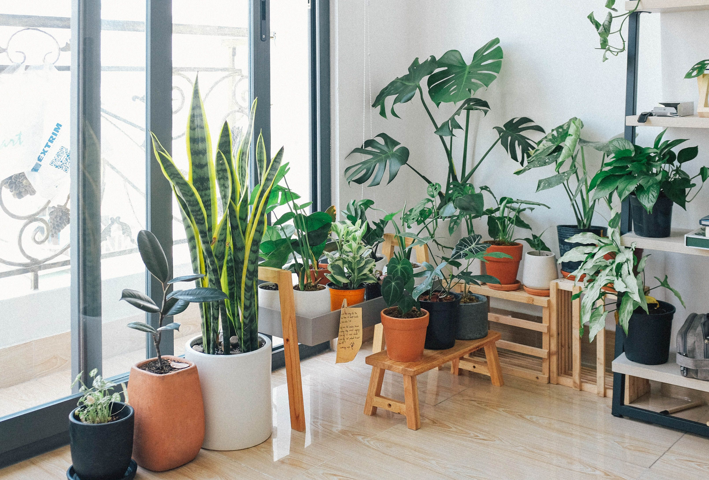

How to Create a Small Balcony Garden

A beautiful garden does not always need a large space. You can create a small garden on your balcony with a few plants and simple gardening tools. A balcony garden makes your home look fresh and attractive.
1. Choose the Right Plants
First, choose plants according to the sunlight and space on your balcony. You can grow flowers, herbs, and small green plants in pots. Mint, coriander, and small flowering plants are good options to start with.
2. Select Suitable Pots
Choose pots according to the size of your plants. Make sure every pot has holes at the bottom. These holes allow extra water to drain out and help protect plant roots.
3. Check Sunlight
Different plants need different amounts of sunlight. Observe your balcony during the day to see which areas receive sunlight. Place sun-loving plants in bright areas and shade-loving plants in suitable shaded places.
4. Use Good Soil
Good potting soil helps plants grow properly. Choose a suitable potting mix for your plants. Healthy soil provides support and helps roots get the water and air they need.
5. Arrange Plants Smartly
Place larger plants near a wall and smaller pots in front. You can also use hanging planters to save floor space. Keep enough walking space so your balcony does not look crowded.
6. Water Your Plants Regularly
Check the soil before watering your plants. Some plants need more water than others. Do not give too much water because wet soil can damage plant roots.
7. Keep Your Balcony Safe
Keep heavy pots in safe and stable positions. Do not place loose pots where strong wind can knock them over. Also, make sure water does not fall onto balconies below.
Conclusion
Creating a small balcony garden is simple and enjoyable. With suitable plants, good pots, proper sunlight, and regular care, you can turn a small balcony into a beautiful green space.
Useful Gardening Resources
Read more about container gardening from these gardening experts: